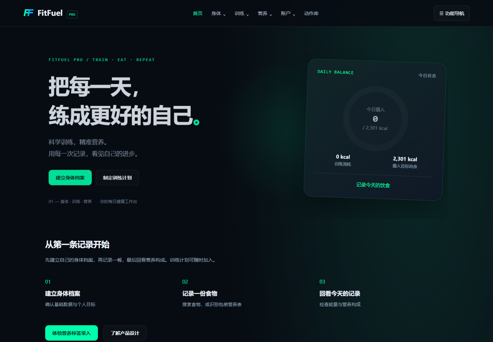
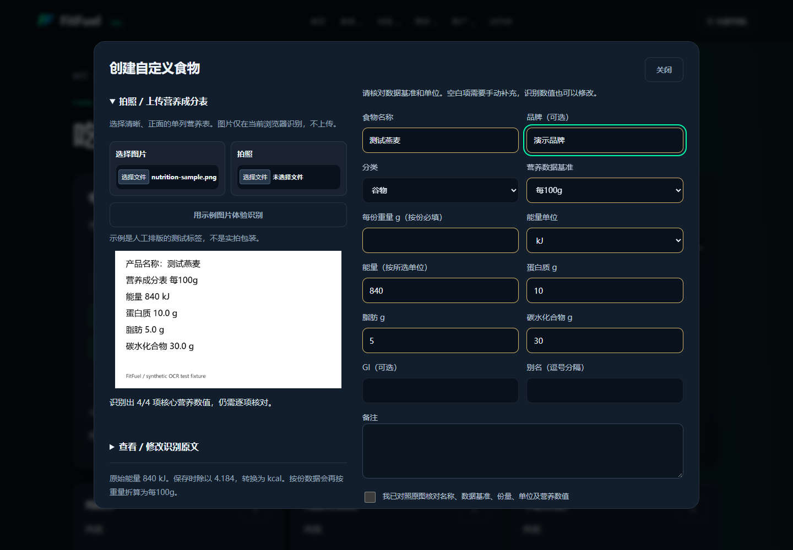
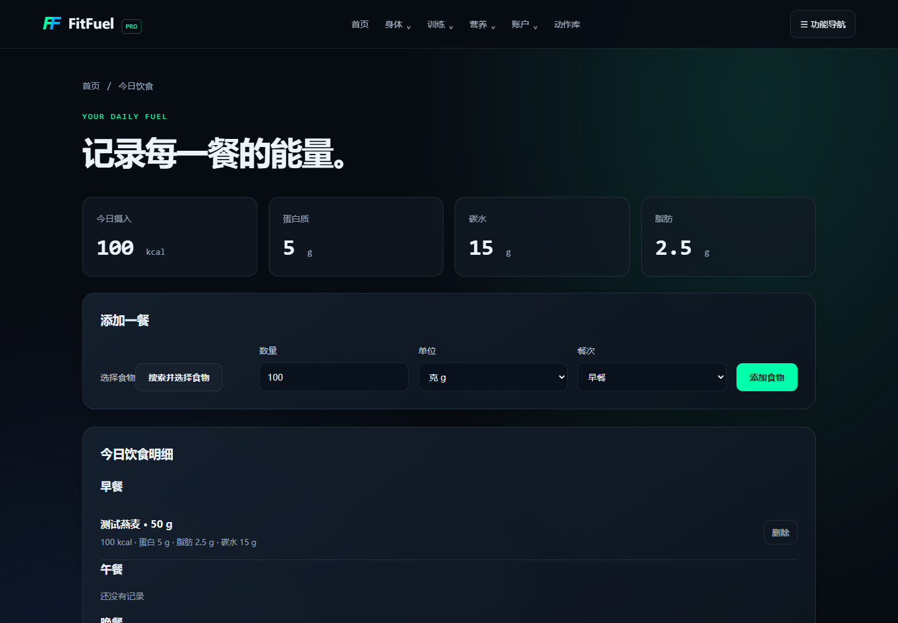

课程项目迭代 · AI辅助开发 · 可操作原型FitFuel Pro
FitFuel Pro
把一张营养标签，
变成一餐记录。
从训练与饮食管理工具中，选择一个可以验证的任务：帮助用户录入包装营养数据，并在保存前完成核对。
选择图片、核对结果、保存食物并记录一餐。当前为可操作原型；真实包装与用户效果待验证。

设计与实现内容任务流程、界面、前端与 OCR 集成
识别方案Tesseract.js + 字段规则 + 人工确认
当前阶段本地原型 / 程序验收 / 待真实用户试用
从一个具体问题开始
录入一种包装食品，需要找到数据基准、区分 kJ 与 kcal，再填写蛋白质、脂肪和碳水。我的设计假设是：先提取一份可编辑草稿，可能减少重复抄写；但识别出错时，用户必须能发现并修正。
这个假设尚未通过用户访谈验证。因此，本轮先实现可试用流程，再通过真实任务观察决定是否继续投入。
四步完成，保存权留给用户
- 选择营养表图片提供拍照、选图和明确标注的合成示例。
- 本地识别与提取保留原图、原文与识别进度，支持中途取消。
- 核对与修正确认数据基准和能量单位，缺失数值留空。
- 保存并记录一餐转换为每100g，按实际克数加入今日饮食。


三个关键取舍
识别后由用户确认
字段保持可编辑。保存前核对名称、基准、单位与营养值；修改后需重新确认。
保留原始数据，统一换算
保存时转换为每100g的kcal，同时保留原单位与份量，方便回查和再次编辑。
不确定时留空
遇到多个基准、毫升或缺失字段，提示用户裁剪单列或手动核实，避免直接猜测。
展开技术、验收与待验证事项
完成了什么，还需要验证什么
| 项目 | 当前状态 |
|---|---|
| 可操作流程 | 图片识别、草稿核对、自定义食物保存、按克数记录饮食。 |
| 功能验收 | 程序报告单独记录：识别样本、单位换算、保存保护、取消、手动补录与移动布局。查看本轮验收记录 |
| 实拍包装质量 | 待验证。合成测试标签不能代表反光、弯曲、模糊或多栏包装。 |
| 用户使用效果 | 待试用。尚无录入耗时改善、留存、转化率等业务结果。 |
一次识别失败，说明为什么需要核对
在按份排版的合成样例里，OCR把脂肪单位“g”识别成了“9”。提取程序因此只填入3项核心营养数值，脂肪保持空白，用户需要对照原图补充。
这说明当前方案还有单位识别的局限。一次能够保存的演示，并不能证明识别准确率；下一轮需要用真实包装检查漏提取和错误填入分别出现在哪里。
下一步：让真实任务决定改进
计划邀请5～8位有饮食记录需求的使用者，用自己的包装食品分别完成手动录入和识别录入，交替安排任务顺序，观察耗时、纠错和任务完成情况。
- 若识别后的修正比手动输入更费时，先改裁剪与字段提取，不继续增加功能。
- 若用户忽略单位和份量，优先调整确认界面，而不是增加更多提示词。
- 若用户找不到保存后的食物，优化录入后加入饮食的衔接。
制作说明
本案例基于原有课程项目迭代。流程整理、界面与代码修改、浏览器验收使用 AI 工具辅助完成；OCR使用开源模型。本轮尚未开展模型训练和真实用户研究。